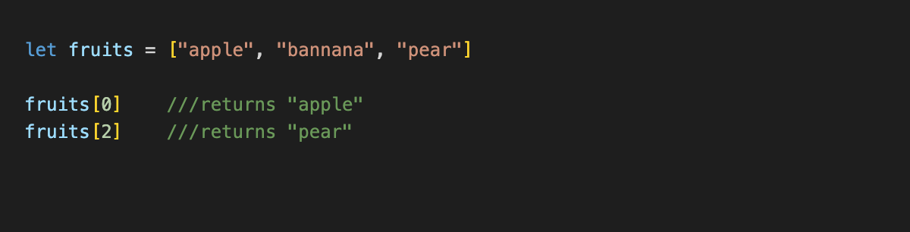
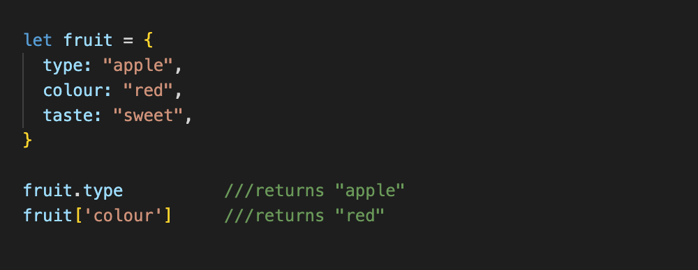
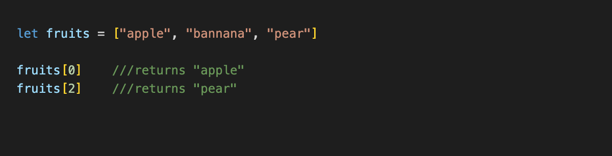
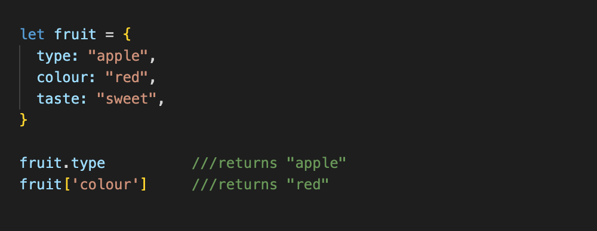

JavaScript Fundamentals
- Give an analogy to describe JavaScript and its relationship to HTML and CSS.
HTML and CSS are co-dependent architects (I know nothing about architecture). They build houses together by combining their unique abilities. HTML says 'we need a kitchen, and in the kitchen we need a sink, an oven, and a fridge'. CSS says in return 'okay, lets put the sink over here by the window and let's paint the kitchen pink'. In this analogy, Javascript wouldbe the specialist providing the house with electricity, running water and WiFi. It makes the house dynamic so that the buyer can actually use it.
- Explain control flow and loops using an example process from everyday life, for example, 'waking up' or 'brushing your teeth' (but not those).
Control flow is the order of steps to be executed. In this example we’ll talk about making toast. These are the steps you need to execute in order of first to last.
- Bread out of fridge
- Put one slice in the toaster
- Turn toaster on
- Wait until toast pops
- Put toast on plate
- Peanut butter out of cupboard
- Scoop out peanut butter with a knife
- Spread peanut butter onto toast
A loop would be repeating steps 7-8 until the toast is fully covered in peanut butter. A loop requires a start condition, instructions to fill out while that start condition is applicable, and an end condition that breaks the loop. When you are making toast you will check to see if the surface of your toast is fully covered in peanut butter. Is it not covered? Then repeat steps 7-8 and check again. When the toast has sufficient peanut butter the loop will end.
- Describe what the DOM is and an example of how you might interact with it.
The DOM (document object model) is what creates an interface for HTML and CSS to interact with other languages, such as Javascript. It represents everything in a web document as objects knows as ‘nodes’. Javascript is able to interact with the DOM to change, create, update and delete these nodes in order to make a web document more dynamic.
You can interact with the DOM using devTools. There are five methods of interacting with the objects in the DOM.
- getElementByID()
- getElementByClassName()
- getElementByTagName()
- querySelector()
- querySelectorAll()
- Explain the difference between accessing data from arrays and objects.
Arrays use numbers to access elements, and objects use names to access data. For example if I had a list containing ‘apple, banana, pear’ and I stored that in an array, I would be able to access each individual fruit by calling it from it’s position in the list. Apple, being first, is at position 0, banana is at position 1, and pear is at position 2. To access the apple, I would call it using ‘array[0]’.

An object can be more specific about the data it stores by keeping properties. The properties are information stored within the object. To elaborate on a fruit themed example; the fruit type is an apple, the colour is red and the taste is sweet. If I wanted to find out a specific property of the fruit (being the object), I could call it using fruit.colour or fruit[‘colour’] to find out that it is red.

- Explain what functions are and why they are helpful.
A function is a block of code used for performing a particular task. They are reusable and can be executed throughout your code whenever they are called. This means if you have a set of instructions you want to repeat, you only have to write out the instructions once, rather than every time they’re needed.
HTML and CSS are co-dependent architects (I know nothing about architecture). They build houses together by combining their unique abilities. HTML says 'we need a kitchen, and in the kitchen we need a sink, an oven, and a fridge'. CSS says in return 'okay, lets put the sink over here by the window and let's paint the kitchen pink'. In this analogy, Javascript wouldbe the specialist providing the house with electricity, running water and WiFi. It makes the house dynamic so that the buyer can actually use it.
Control flow is the order of steps to be executed. In this example we’ll talk about making toast. These are the steps you need to execute in order of first to last.
- Bread out of fridge
- Put one slice in the toaster
- Turn toaster on
- Wait until toast pops
- Put toast on plate
- Peanut butter out of cupboard
- Scoop out peanut butter with a knife
- Spread peanut butter onto toast
A loop would be repeating steps 7-8 until the toast is fully covered in peanut butter. A loop requires a start condition, instructions to fill out while that start condition is applicable, and an end condition that breaks the loop. When you are making toast you will check to see if the surface of your toast is fully covered in peanut butter. Is it not covered? Then repeat steps 7-8 and check again. When the toast has sufficient peanut butter the loop will end.
The DOM (document object model) is what creates an interface for HTML and CSS to interact with other languages, such as Javascript. It represents everything in a web document as objects knows as ‘nodes’. Javascript is able to interact with the DOM to change, create, update and delete these nodes in order to make a web document more dynamic.
You can interact with the DOM using devTools. There are five methods of interacting with the objects in the DOM.
- getElementByID()
- getElementByClassName()
- getElementByTagName()
- querySelector()
- querySelectorAll()
Arrays use numbers to access elements, and objects use names to access data. For example if I had a list containing ‘apple, banana, pear’ and I stored that in an array, I would be able to access each individual fruit by calling it from it’s position in the list. Apple, being first, is at position 0, banana is at position 1, and pear is at position 2. To access the apple, I would call it using ‘array[0]’.
An object can be more specific about the data it stores by keeping properties. The properties are information stored within the object. To elaborate on a fruit themed example; the fruit type is an apple, the colour is red and the taste is sweet. If I wanted to find out a specific property of the fruit (being the object), I could call it using fruit.colour or fruit[‘colour’] to find out that it is red.
A function is a block of code used for performing a particular task. They are reusable and can be executed throughout your code whenever they are called. This means if you have a set of instructions you want to repeat, you only have to write out the instructions once, rather than every time they’re needed.